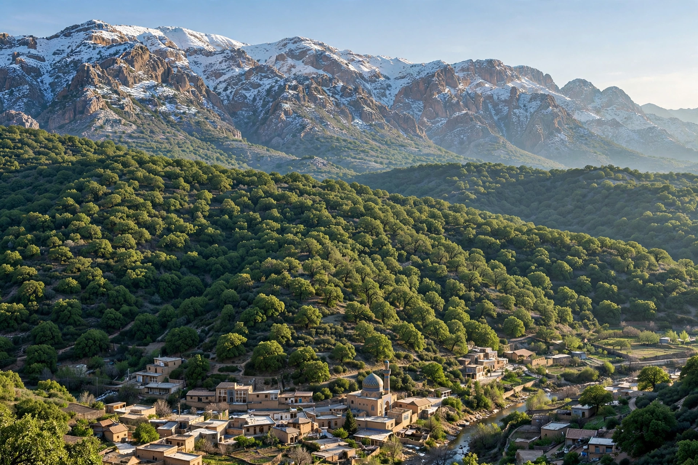

Mount Dena
| Mount Dena | |
|---|---|
| Highest point | Qash-Mastan, 4,409 m (14,465 ft) |
| Coordinates | 30.95° N, 51.43° E (approx.) |
| Geography | Zagros Mountains, Kohgiluyeh and Boyer-Ahmad Province, Iran |
| Range | Dena sub-range of the Zagros |

Mount Dena (Persian: کوه دنا, Kuh-e Dena; Luri: دنا) is a mountain range and massif in the Zagros Mountains of southwestern Iran, on the border of Isfahan province and Kohgiluyeh and Boyer-Ahmad province, southeast of the town of Sisakht. Stretching some 80 kilometres from northwest to southeast, the Dena range contains more than 40 peaks above 4,000 metres, making it one of the most impressive high ranges of the Zagros. Its highest summit is usually given as Qash-Mastan at 4,409 metres (some surveys cite 4,435 m), making Dena the highest point of the entire Zagros fold belt.
Geology and climate
The range is built of folded Mesozoic limestones and other sedimentary rocks thrust up during the collision of the Arabian plate with Eurasia. Deep gorges carved by headwaters of the Karun river system cut the southern flanks. Winters bring heavy snow above about 3,500 metres, and small glaciers and permanent snowfields survive in shaded cirques; the snowmelt feeds springs and the traditional orchards of Sisakht and surrounding villages.
Ecology
The Dena Protected Area and Biosphere Reserve (designated by UNESCO in 2010) covers much of the range. Its slopes carry the western Iranian oak forests dominated by Quercus brantii, with wild pistachio and almond, and alpine communities above the treeline. Mammals include brown bear, leopard (rare), wild goat (bezoar ibex), wolf and striped hyena; the region is noted for raptors such as the golden eagle and for endemic plants among its more than 1,200 recorded species.
Climbing
Dena is a popular objective for Iranian mountaineers, both as a summer trekking traverse and for winter ascents. The usual base is Sisakht (about 2,100 m), with huts and known routes to the main summits including Bijan peaks and Qash-Mastan.
See also
Zagros Mountains · Mount Damavand · Kohgiluyeh and Boyer-Ahmad province